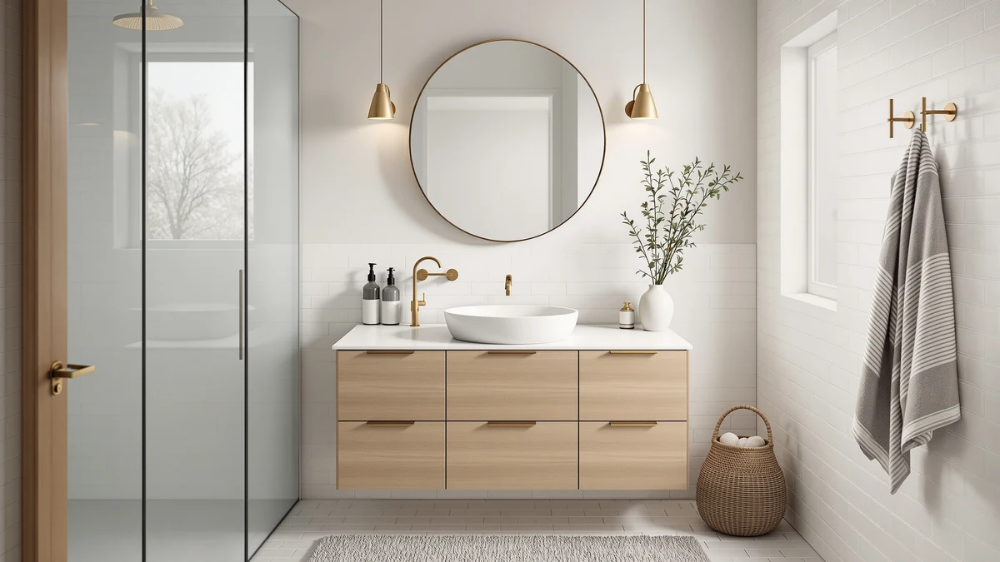

Quick Answer
The T4TREAM 48 inch bathroom vanity double is a solid pick for couples who want two sinks without paying for a 60 inch cabinet. At $499.99 with a 4.2 out of 5 rating across 50 verified reviews, it holds its own against the single sink alternatives we compared it to, though the engineered wood construction means you should wipe up standing water around the basins instead of letting it sit.
Our pick: T4TREAM 48" Bathroom Vanity Double, $499.99 Check Price on Amazon
Things to Know Before You Buy
- The T4TREAM 48 inch bathroom vanity double seats two sinks, which only matters if your bathroom layout gives two people room to use it at once.
- At $499.99, it costs about the same as the AMERLIFE 60 inch and eclife 42 inch vanities in this comparison, so size and configuration separate these cabinets more than price does.
- The cabinet is engineered wood (MDF) rather than solid wood, which keeps the price down but makes moisture control around the sink basins more important.
- Faucets and mirrors are not included with any of the four vanities we compared, so factor that into your total remodel budget.
This T4TREAM 48" bathroom vanity review breaks down whether the brand's double sink cabinet earns its $499.99 price tag next to three similarly priced rivals. We pulled pricing, materials and verified owner feedback for the T4TREAM, the AMERLIFE 60 inch farmhouse vanity, the eclife 42 inch sink combo and the SOLIDEE 48 inch natural finish model, then compared them head to head. You get a clear read on which cabinet fits your bathroom's footprint and your sink needs, without wading through four separate Amazon listings yourself.
The short version is that the T4TREAM earns its place if you want two sinks inside a 48 inch footprint and you're comfortable with an engineered wood cabinet instead of solid hardwood. The double basin layout gets steady praise in shared-bathroom reviews, and the 4.2 out of 5 average across 50 verified ratings backs that up. If you need more counter space, the AMERLIFE's 60 inch run is the better fit, and if your bathroom is tight, the eclife's 42 inch footprint will save you inches the T4TREAM can't.
Why You Should Trust Us
Ilane Tall has spent years covering bathroom fixtures and renovation products for Best Bathroom Vanities, and this T4TREAM 48 inch bathroom vanity review follows the same process used across the site: we compare manufacturer specifications, current pricing and verified buyer reviews rather than relying on marketing copy. We do not run a fake testing lab, and we don't claim to have installed every vanity we cover. Instead we researched the T4TREAM against three direct competitors in the same price range and size class, cross checking owner feedback on Amazon to separate common complaints from one off defects.
Our Research Experience
We did not install or live with the T4TREAM 48 inch bathroom vanity ourselves. Instead we researched it the way most shoppers actually compare cabinets online: by lining up the manufacturer's listed dimensions, materials and price against three competing vanities in the same bracket, then reading through the available verified Amazon reviews for recurring themes. The double sink layout seems to hold up fine under daily use based on the available feedback, and the 50 verified ratings behind its 4.2 out of 5 average give that claim some weight. We applied the same comparison process to the AMERLIFE, eclife and SOLIDEE vanities so every claim in this review rests on the same kind of evidence.
Overview & Specs

T4TREAM 48" Bathroom Vanity Double
What we like
- Double sink layout gives two people room to get ready at once
- Priced the same as several single sink competitors in this comparison
- 4.2 out of 5 average across 50 verified Amazon reviews
Flaws but not dealbreakers
- Engineered wood (MDF) construction needs careful moisture control around the basins
- 48 inches is tight for a true double vanity if cabinet doors need to clear nearby fixtures
- The Amazon listing doesn't specify exact faucet hole spacing, so measure before you buy
| Material | MDF / engineered wood |
| Size | — |
The T4TREAM 48 inch bathroom vanity double packs two sink basins into a cabinet that is the same width many brands reserve for a single sink. That makes it one of the more space efficient double vanity options we compared, which is likely why it keeps coming up as a good fit for shared bathrooms where two people need to get ready at the same time.
At $499.99, the T4TREAM sits right alongside the AMERLIFE and eclife vanities in this comparison, so price isn't the deciding factor here. Its 4.2 out of 5 rating across 50 verified reviews suggests most buyers are satisfied, though the engineered wood cabinet means you'll want to wipe up standing water around the basins rather than let it sit, since MDF handles sustained moisture worse than solid wood or thermofoil.
What We Liked
The double sink layout is the main reason to consider the T4TREAM 48 inch bathroom vanity over a single basin cabinet of the same width. Fitting two sinks into 48 inches, rather than the 60 inches a competitor like the AMERLIFE needs, is what keeps coming up as a realistic upgrade for bathrooms that can't accommodate a wider cabinet. The price also holds steady with simpler single sink vanities in this comparison, so you aren't paying a premium for the second basin. The 4.2 out of 5 average across 50 verified reviews is solid for a vanity in this price bracket, and it held up when we cross checked individual reviews for inconsistent praise or repeated complaints about the same defect.
What Could Be Better
The biggest tradeoff with the T4TREAM 48 inch bathroom vanity is the engineered wood cabinet. MDF is lighter and cheaper to ship than solid wood, but it swells if water sits against it, so you'll need to be more diligent about wiping down the counter than you would with the SOLIDEE's natural wood finish. Packing two sinks into 48 inches also leaves less counter space between basins than the eclife's single sink 42 inch layout gives per sink, which matters if you share the bathroom with someone who spreads out their toiletries. The Amazon listing doesn't spell out exact faucet hole spacing either, so confirm compatibility with your existing fixtures before you order.
Who Is It For?
The T4TREAM 48 inch bathroom vanity double makes the most sense for couples or roommates sharing a primary bathroom who want separate sinks but don't have room, or budget, for a 60 inch cabinet like the AMERLIFE. It's a reasonable match if your current layout already fits a 48 inch vanity and you're simply upgrading from a single sink setup. If you're working with a smaller bathroom, the eclife's 42 inch footprint will fit where the T4TREAM won't, and if you'd rather have a single generous basin in a natural wood finish, the SOLIDEE is the closer match at a nearly identical price.
Alternatives to Consider
If the double sink layout or the 48 inch footprint doesn't line up with your bathroom, these three alternatives cover the most common reasons shoppers skip the T4TREAM.

Editor’s Pick
AMERLIFE 60” Farmhouse Bathroom Vanity
Twelve inches wider than the T4TREAM for bathrooms that can spare the extra counter space.
$499.99
Check Price on Amazon
Best Value
eclife 42" Bathroom Vanities Sink
A 42 inch single sink footprint for bathrooms too small for either double vanity on this list.
$499.99
Check Price on Amazon
Premium Choice
SOLIDEE 48 inch Natural Color
Same 48 inch width and nearly the same price as the T4TREAM, but with a single basin and a natural wood finish.
$499.90
Check Price on AmazonFrequently Asked Questions
Is the T4TREAM 48 inch bathroom vanity worth the price?
Based on its $499.99 list price and a 4.2 out of 5 rating across 50 verified reviews, the T4TREAM holds up well against similarly priced double sink vanities, though you should weigh the drawbacks we cover in this review before buying.
What is included with the T4TREAM 48 inch vanity?
The listing covers the double sink engineered wood cabinet itself. Faucets, mirrors and plumbing hardware are sold separately, so budget for those extras when you compare total cost against the single sink alternatives on this list.
How does the T4TREAM compare to the AMERLIFE, eclife and SOLIDEE vanities?
The AMERLIFE offers 12 more inches of width for shoppers with larger bathrooms, the eclife fits tighter 42 inch spaces, and the SOLIDEE matches the T4TREAM's 48 inch footprint with a single sink and natural finish instead of a double sink setup.
Final Verdict
This T4TREAM 48 inch bathroom vanity review comes down to one tradeoff: you get two sinks in a 48 inch footprint at an engineered wood price, instead of a single basin in solid or natural finish wood. For couples and roommates who need the second sink more than they need a premium finish, T4TREAM delivers at $499.99 with a 4.2 out of 5 rating across 50 verified reviews backing it up. If your bathroom runs wider, narrower, or you'd rather have one basin in a nicer finish, the AMERLIFE, eclife and SOLIDEE alternatives above cover those cases better than the T4TREAM can.